Frankenstein’s Input Field
My attempt to tame complexity in Design Systems
Overview
In this case study, I will detail my attempt to create a complex, universal component designed to cover all possible use cases and scenarios.
I’ll also share my lessons learned in managing complexity within design systems.
Introduction
I’m passionate about design systems and love experimenting with them. One rainy weekend, I decided to have some fun with an input field component in Figma.
I wanted to see if I could create a better version of what I call the “perfect universal component.”
The goal was to design an input field UI component that functions like a
Swiss army knife
adaptable and useful in every possible scenario.
Research
My journey started with a deep dive into countless examples of input fields scattered across the internet.
I meticulously took screenshots and studied over a hundred variations to grasp the wide range and intricacies of input field designs.
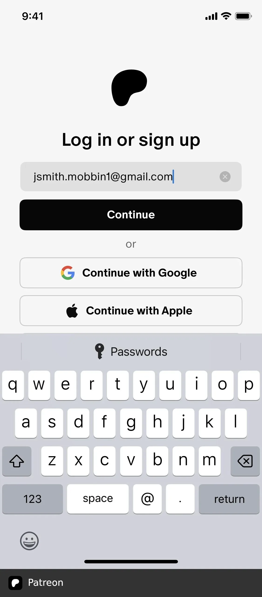
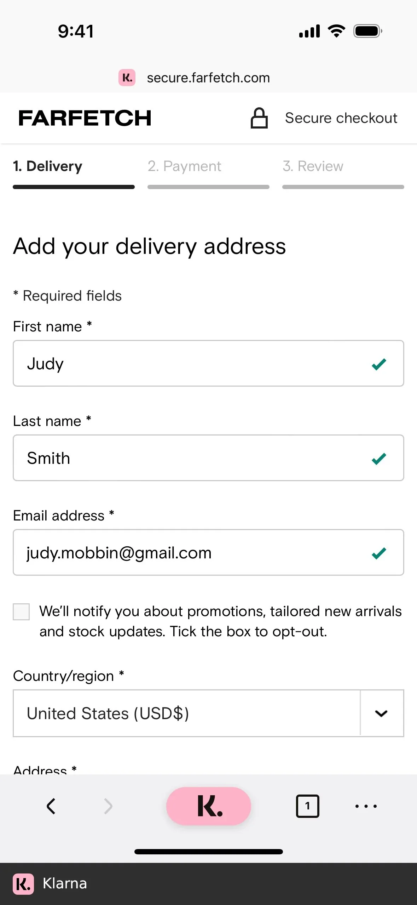
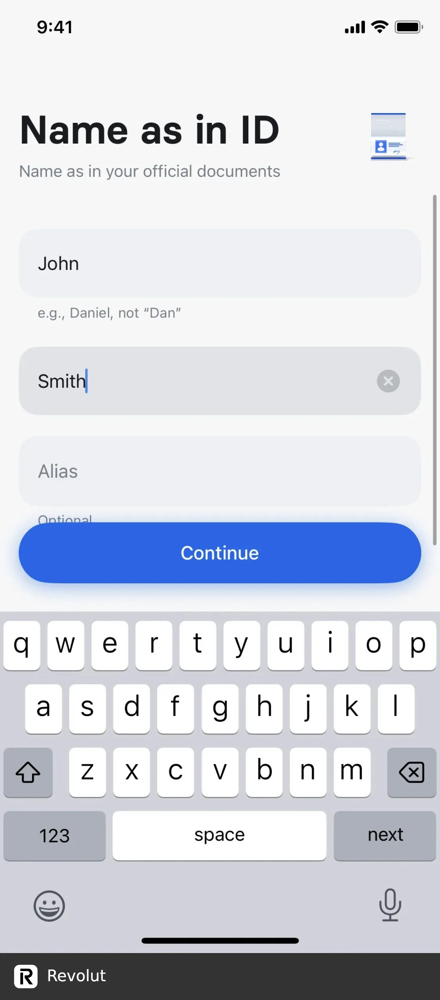
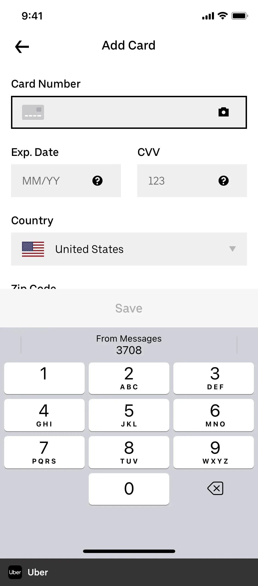
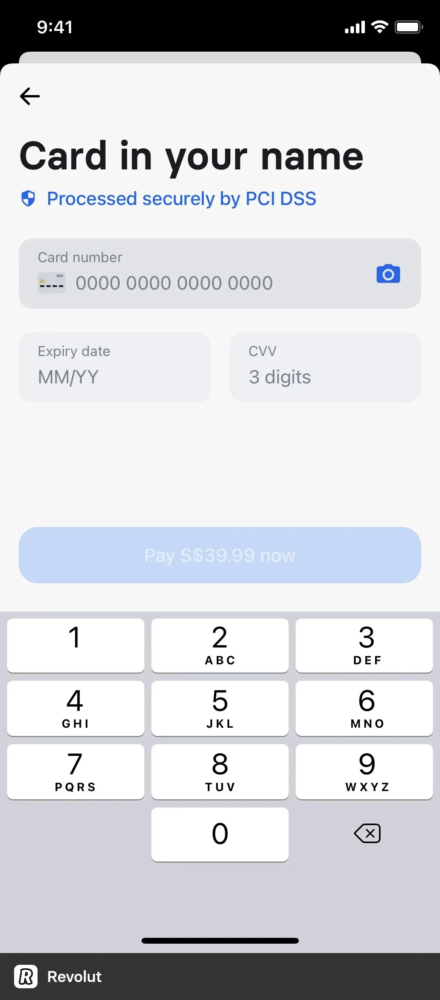
Analysis
I began by noticing patterns in various input field designs, aiming to identify similarities that could form the foundation for a flexible and scalable component. I labeled the most commonly used parts of input fields to ensure they were all included in my universal component.
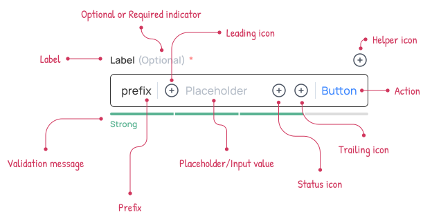
Defining the Structure
Armed with insights from my analysis, I meticulously defined the structure of the input field component.
By isolating individual elements and creating standalone components, I laid the foundation for future iterations and expansions to accommodate new use cases.
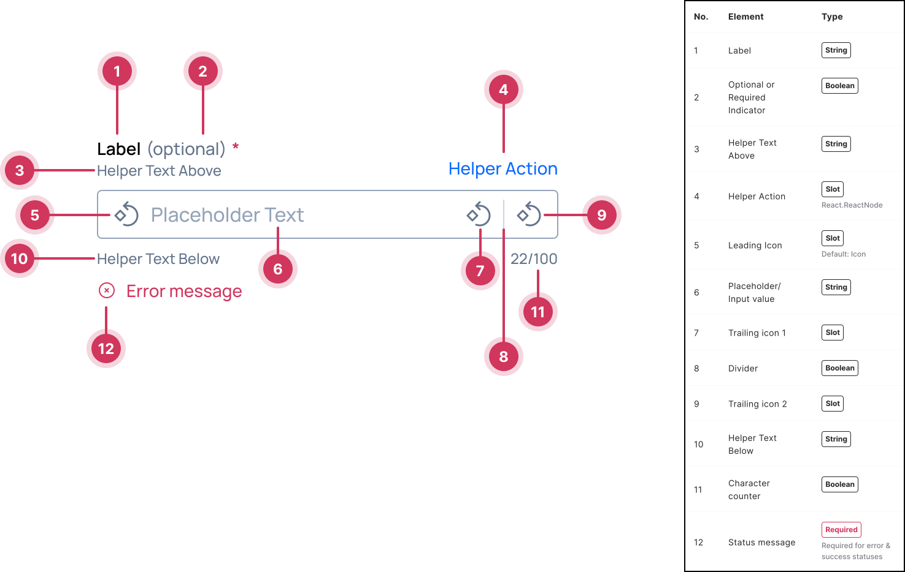
Build
Next, I dove into my favorite phase – the build phase, leveraging the power of Figma’s Boolean properties and nested structures to construct the versatile input field component. This approach enabled me to avoid the bloating of hundreds of unnecessary variants, ensuring a lean and efficient design.
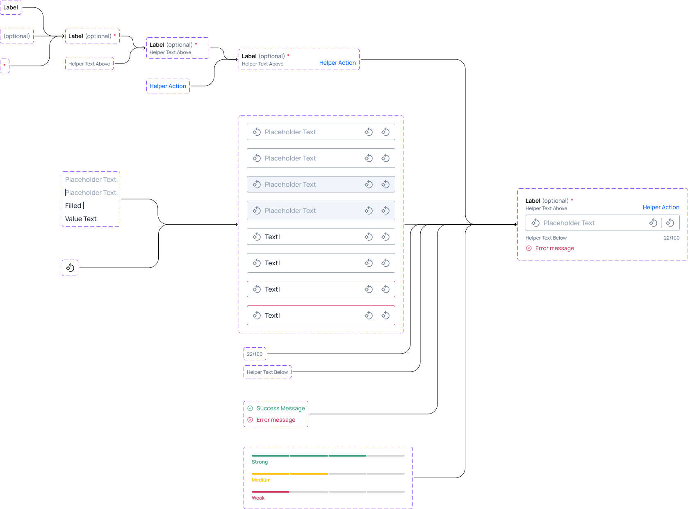
Validation
To validate the efficacy of the newly crafted component, I put it to the test against a comprehensive collection of use case examples gathered during my research phase. While I successfully covered the majority of scenarios, some complex edge cases proved too unwieldy to include without sacrificing usability and simplicity.
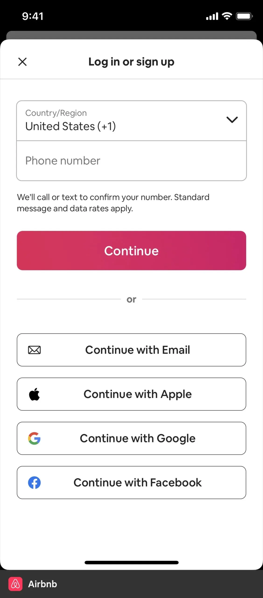
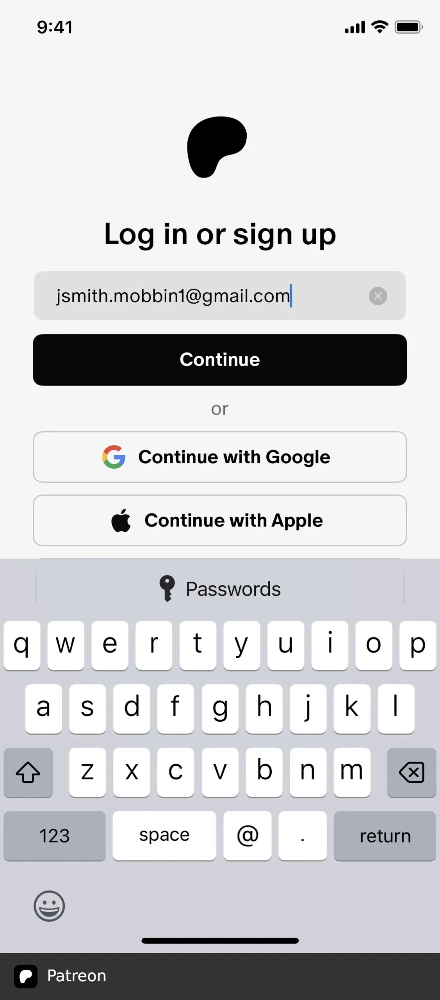
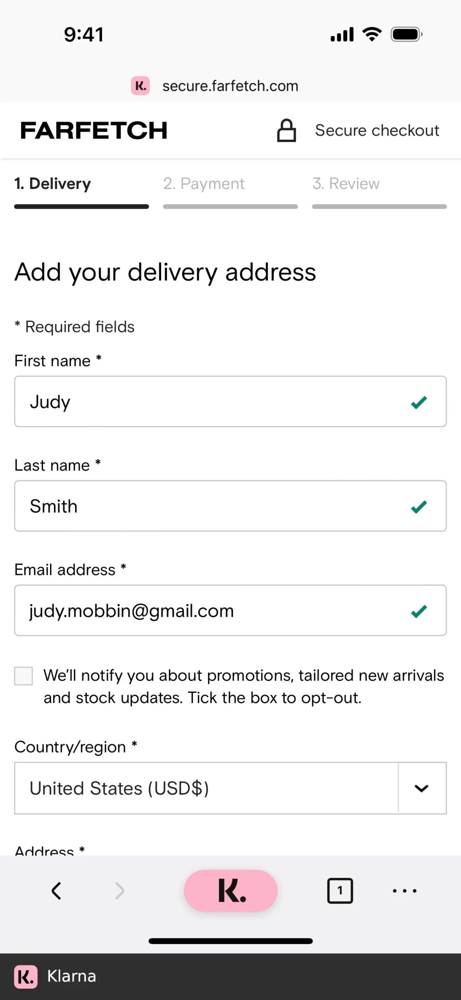
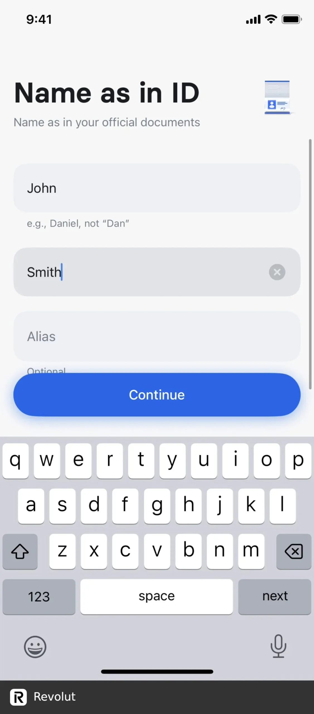
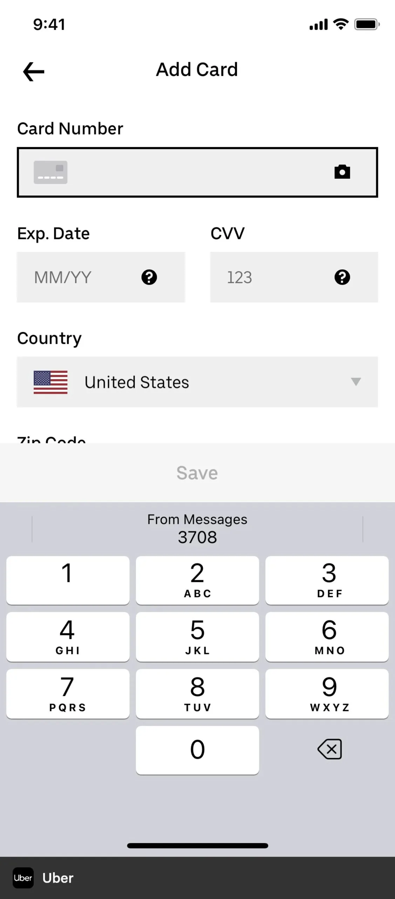
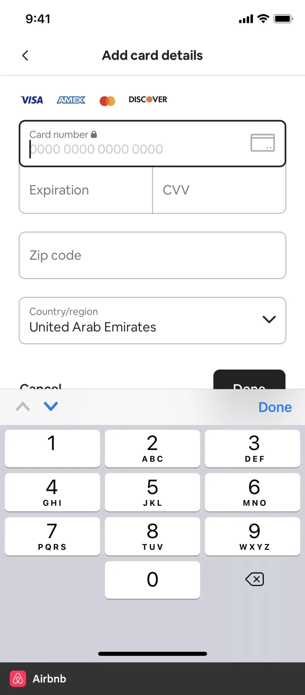
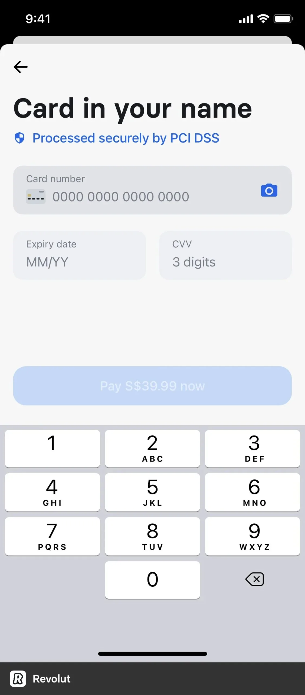
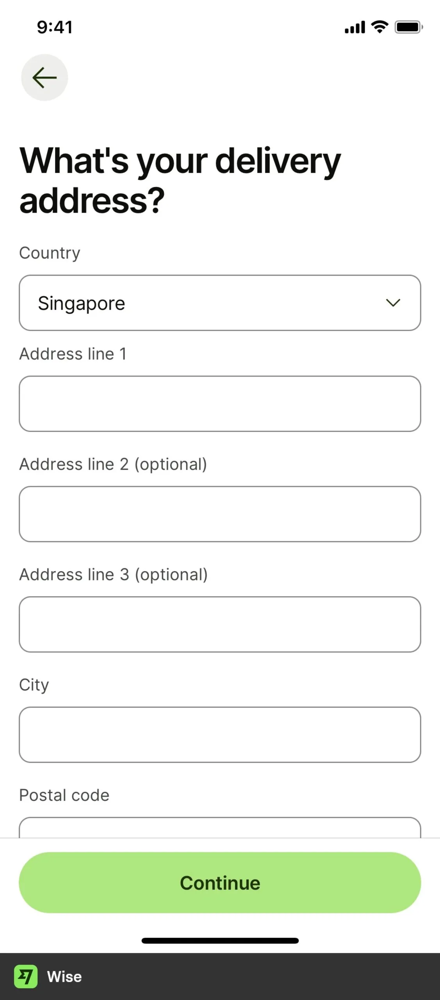
Usability Test
With the component constructed, I enlisted the help of a trusted test participants – my team. Comparing the new “Swiss knife” component to a simpler, existing version, we conducted a series of tasks to assess usability and efficiency.
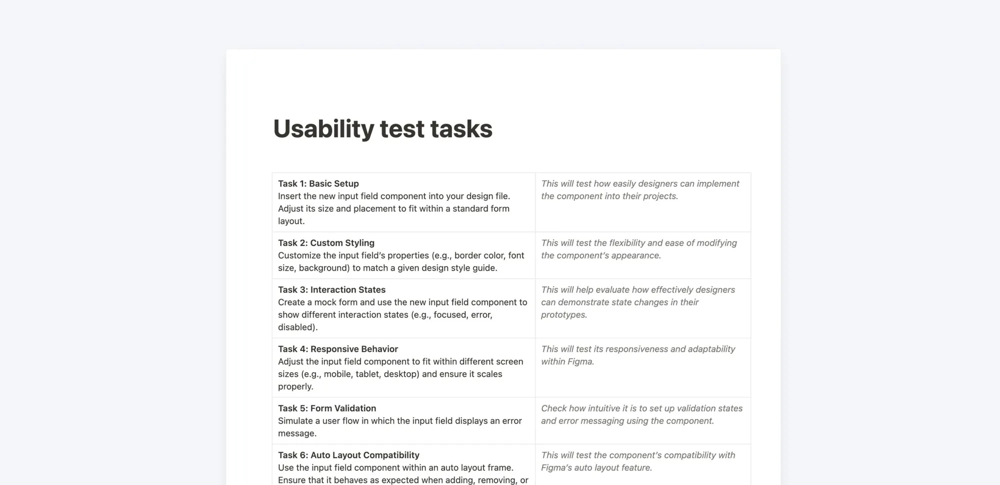
Results
Surprisingly, despite its sophistication and expanded capabilities, the new component fell short in usability.
My team completed tasks almost twice as fast with the old, simpler component, citing the overwhelming number of properties and clicks required to navigate the new design.
New component performance
Slower ☹️
Click to complete the task
Properties
Closing Thoughts
In design systems, simplicity is key. While creating a one-size-fits-all solution sounds appealing, usability must come first.
That’s why universal design systems often fail: they try to cover too many use cases and aren’t tailored to the specific needs of your company and audience.
As design system designers, our goal is to create simple, user-friendly components that enhance user experiences and streamline workflows. It’s not about being fancy or covering every possible use case; it’s about being effective and impactful.
To avoid a Frankenstein component, keep it simple and user-friendly. Don’t try to cover every possible use case out there.